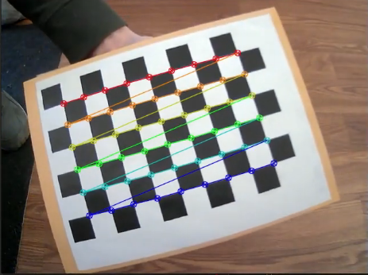
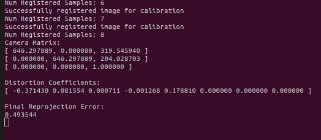
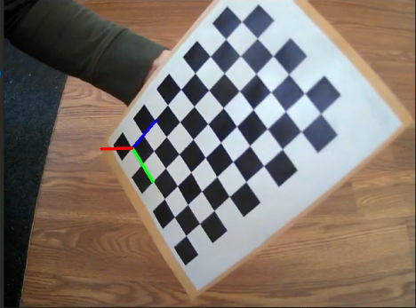
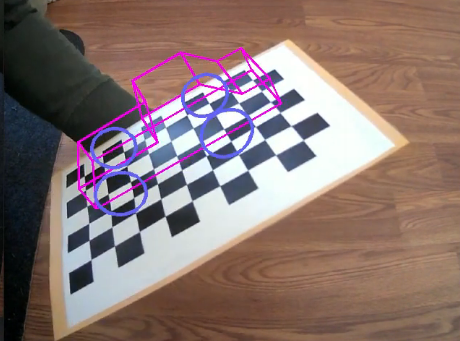
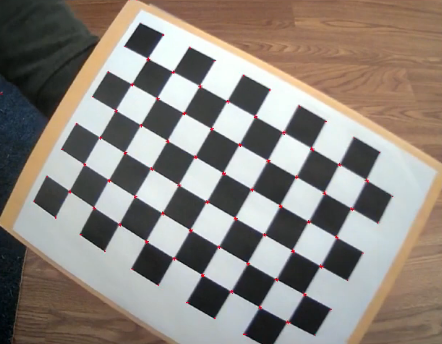

Greg Attra | CS 5335 Prof. Maxwell
This project focused on the foundamentals of augmented reality using a checkerboard pattern to track and project onto. The first part focused on camera calibration, which consisted of finding the corners of the checkerboard and compiling a small dataset of images with the checkerboard at various translations and rotations with respect to the camera, and then using those samples to predict a camera calibration model. The second half consisted of using the predicted intrinsic parameters to track and project objects onto the checkerboard.
Here is a video of the program in action: https://youtu.be/ZmhS2BurlAU
The Calibration process can be broken into three parts:
Using OpenCV’s API we can find the corners of the checkerboard as follows:
cv::findChessboardCorners(*img, size, corners, flags);
Where img is the target image, size is the size of the checkerboard in number of cells on each axis, and corners is a buffer to store the corner locations.
Using OpenCV’s drawChessboardCorners(), we can visualize the found corners:

We can press s to save the detected corner pixel locations and assign them 3D world points. In this case, the program measures the world in units of checkerborad squares (i.e. the top left square is at coordinate (0, 0, 0) in the checkerboard frame).
Once we have at least 5 samples saved, we can calibrate the camera:
calibration.final_proj_err = cv::calibrateCamera(
points_list,
corners_list,
size,
calibration.camera_matrix,
calibration.dist_coeffs,
rotations,
transformations,
cv::CALIB_FIX_ASPECT_RATIO);
Where points_list is a vector of vectors each holding the 3D points for each corner set and corners_list is a vector of vectors each holding the detected corner locations.
The program will output the predicted intrinsic parameters:

Pressing w will write the intrinsic parameters to a file in files/params. These params can be loaded from this file by pressing l.
Object projection consists of two parts:
Once intrinsic parameters of sufficient quality (with a reprojection error of < .5 pixels) we can move onto projection. To project an object onto an image, we first need to predict the checkerboard’s translation and rotation. We can do this using OpenCV’s solvePnP() method:
cv::solvePnP(
points,
corners,
calibrator->calibration.camera_matrix,
calibrator->calibration.dist_coeffs,
pose.rotation,
pose.translation);
Where corners are the pixel locations for the detected checkerboard corners and points are the 3D position for each corner. The camera_matrix and dist_coeffs are the loaded intrinsic params computed in the Calibration phase.
We then draw the checkerboard 3D axis onto the checkerboard:

Once we have the pose, we can use OpenCV’s projectPoints() function to project the points corresponding to the lines comprising the object we want to project.
For example, to project the wheels of a truck onto the checkerboard, we pass in the 3D points comprising the wheel:
cv::projectPoints(
wheel_points,
pose.rotation,
pose.translation,
pose.camera_matrix,
pose.dist_coeffs,
img_points);
This will populate img_points with the pixel locations for each of the wheel_points.
We can then draw lines to connect these pixel points to project the object on the checkboard:

Another way of tracking an object moving in an image is to use the Harris equation to detect strong corners. The ./HarrisCorners program does this:

Here the detected Harris Corners are marked in red (it may be difficult to see).
This project came together relatively quickly for me, mostly due to OpenCV’s API doing a lot of the heavy lifting. Where I struggled the most was in developing an intuitive sense of the projection from 3D to 2D. Once this clicked with me, I was able to create points for the truck object with relative ease.
I am excited by the applications of AR. It was fun to explore the underlying mechanics of how it is accomplished and I plan to incorporate it into future projects. I like the idea of using AR to enable a human to instruct a robot to move to a target location.